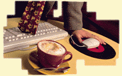

Picture Ernest Hemingway, Gertrude Stein and Ezra Pound gathered around a Macintosh, arguing over which search engine works best.
Had the Internet been a reality in the late '20s, the trio and their fellow expatriates may likely have idled away the hours sipping espresso and posting to alt.bullfighting at Cyberia or any of the other number of cybercafés that now crowd Paris' Left Bank.
With businesses looking to expand their niches as a route to survival, (witness the combination Taco Bell/ Kentucky Fried Chicken outlet I pass every day on the way to work) the Internet café is the perfect marriage of the two biggest phenomena of the decade: $2.88 mochas and 28.8k modems.
Essentially cybercafés can be divided into two categories: cafés that happen to feature Internet connections and computer labs that happen to serve cappuccino. Once the novelty factor has passed, the key to prosperity in this booming business may be successfully blending both components. "We are a fully integrated café, says Thomas Wise, co-owner of the Cyber Café (http://www.bid.com/bid/cybercafe/) in the SoHo neighborhood of New York City. "We're not like a bar that just stuck a couple of pinball machines in. The Internet is integrated into everything we do."
Wise, who along with his partners opened the café last summer, says business has been brisk, with patrons coming in to get wired on both caffeine and the 'net. "Everything you need to know about the 'net is here," says Wise. Indeed the Cyber Café is fully loaded with a T1 line, state-of-the-art PCs, video cameras, full software platforms, even access to all the online services -- all at the rate of $10 an hour. In addition, Wise adds, "Our coffee's good. We're all very into our coffee."
Cybercafés are a true global phenomenon. According to the Cyber Café Guide version 12.8 at http://www.easynet.co.uk/ pages/cafe/ccafe.htm there are 54 Internet cafés in England alone. From Sydney to Cape Town to Rio to Warsaw to Kuala Lumpur, people are sipping latt»s and using Lycos.
In fact the Internet café can trace its origins to Cyberia in London, which is largely credited by most as being the first fully wired café. After reading about Cyberia in magazines, Percy Wang, a co-owner of the Interactive Bean, Chicago's first full cybercafé, and Dan Barron, co-owner of the Big Surf in Birmingham, Mich., were inspired to open their own cafés.
Wang, a 27-year-old multimedia designer, says he and his co-owner, Andrew Laing read about Cyberia and decided they needed "a place like that to hang out ourselves." Wang says they originally shelved the idea of a caf» to concentrate on their design business, GORP New Media, until clients started asking for help designing Web sites. Wang did a little research and since there were essentially no cybercafés in Chicago, the pair decided to give it a try.
"The Interactive Bean is friendly place," says Wang. Indeed, the Interactive Bean (http://iris.gorpnm.com/ibean/) is meant to be a place where a newbie can feel comfortable asking questions while getting their feet wet. Wang says the café, which opened in December last year, isn't a techno-macho place. In fact, the staff has more of a service background than tech background. "It's easier to teach someone to use Netscape than to teach them to be nice to someone."
In addition to 10 computers and a T1 line, the Bean offers patrons their own e-mail accounts for $10 a month plus discounts on the café's normal rate of 16 cents a minute for computer time. Wang says he was expecting more of a "Generation X-type crowd," but surprisingly the average patron has been in their mid-30s, which may speak as much to the café's strict "no smoking" policy than the lure of the Internet. Surfing the 'net in a café environment turns what can be a very lonely hobby into a social experience, says Wang. It's not unusual for groups of three or four to be clustered around the café's Macs. Wang likes to emphasize the interactive aspect of the café, stressing that even if the Internet boom goes bust, the café still features CD-ROMs and other bells and whistles. "We even have Jenga!" says Wang.
Veronica Barron, who along with her husband Don and four other partners owns the Big Surf (http://bigweb.com/cafe/), also stresses a friendly and accessible atmosphere. In addition to the computers and coffee, the café is decorated like a 1940s Jamaican beach hut, which enhances the relaxed atmosphere. Barron says the café's philosophy revolves around two main components: Bring the Internet to the people and create a multi-faceted business. "People are sick of sitting in their spare bedroom staring at their computers. It's more fun to surf the 'net in our environment, plus it's faster (the café features a T1 line). It's just a more satisfying experience."
 The crowd at the Big Surf ranges from moms with toddlers in the morning, to a brisk business lunch, to late-night singles hanging out in chat rooms. For newbies the café offers Internet 101 classes that cover all the bases or patrons can also ask staff members questions or for site suggestions.
Café Liberty (http://cafeliberty.com/), located in a basement space in Cambridge, Mass., leans toward the café side of the cybercafé equation.
Jon Sudbury, the café's 26-year-old co-owner, says he doesn't think it makes sense to open up a new café designed primarily for surfing. "A lot of places are opening now that build big elaborate systems... it just doesn't make sense. It's like reinventing the wheel." Café Liberty has three computers hooked up to the 'net, and at $4 an hour with a T1 connection, Sudbury says the café attracts both novices as well as experts from next-door neighbor MIT. "Why would an MIT student use our machines and pay money when they are free at school? It turns out that people enjoy dropping by the café during the day and not having to go into the lab to check their e-mail. People like to be around other human beings."
Even though it was the computer aspect that attracted him to the café business, Sudbury says that it's ended up being a lot more food service than high tech. "The café stuff takes up 95 percent of the time. Anyone who wants to open a café has to be aware that they'll be owning a café primarily." Sudbury says that adding terminals to an established café can be as simple as expanding a menu. In fact, Sudbury is finalizing plans for Java Link, based on SF Net in San Francisco and Cafenet in Los Angeles, where cafés can get second-generation units for their patrons to use, much like pay phones.
When cafés first started to gather steam again in the early '90s, most cities featured dozens of independent spaces, each with its own unique style and atmosphere. Of course, at the same time there was a small chain in Seattle, the coffee capital of the free world, known as Starbucks. Now with the ubiquitous mermaid logo dotting seemingly every street corner in the country's urban centers and strip malls in finer suburbs everywhere, and many of those early coffee houses now housing bagel shops or fresh baked bread stores, can a cybercafé chain be far behind?
David Green, the co-owner of Café Internet (http://www.cafe-inet.com) in Port Townsend, Wash., is betting on it. Green has recently started to offer franchises of his café, offering (besides the trademarked name): support services, exclusive apparel, buying power, advertising, established protocols and even Café Internet coffees and syrups.
So far, Green says he's had inquiries from all over the country. Green, whose own café features a French motif with classical music and fresh flowers, three computers and an ISDN connection, says many inquiries have come from tourists who stop in the café for a cup of coffee and to check their e-mail while they're on vacation.
If an ordinary cybercafé seems too run-of-the-mill, someday soon you'll be able to sip your espresso and browse ESPN from the comfort of the top of an authentic double-decker bus. Circus Espresso Bars (http://http://www.island.net/~circus/) have recently begun to advertise their "Super Cyber Espresso Bus" concept, double-decker buses direct from Great Britain with full espresso bars downstairs and computer terminals upstairs. Jonathon Fenton, the co-president of Circus, says the buses have the advantage of generating extra excitement; plus if you don't like your location you can always just move. At press time, no one had stepped up to purchase a Cyber bus -- a fully loaded one costs $64,000 -- but Fenton is so confident that the concept can work he's pitched the idea to Apple and Microsoft, hoping one of the corporations would want to use a bus as a cyberbookmobile for the '90s.
While the number of cybercafés seems to grow every day, it will be consumers who ultimately determine whether they're more comfortable in their homes or in a café, surfing and slurping.